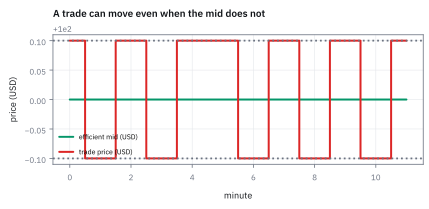
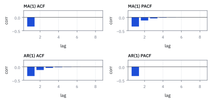
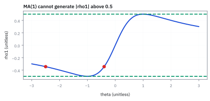
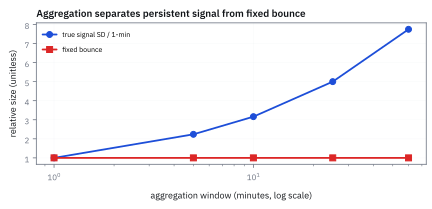

16.3 MA, ARMA, and ARIMA
แยกความจำของค่าเดิมออกจากความจำของแรงกระแทก
ตัววัดเด้งขึ้นลงสลับกันทุกนาที; นี่คือกฎทำนาย หรือเพียงหัววัดกระแทกขอบบนกับขอบล่าง? เฉลย: ความสัมพันธ์ตามเวลาอาจมาจากค่าก่อนหน้า shock ก่อนหน้า หรือ noise ของการวัด.
เราจะแยก moving-average process (MA), autoregressive moving-average (ARMA) และ autoregressive integrated moving-average (ARIMA) ตามชนิดของความจำที่แต่ละแบบเก็บ.
ภาพจำ: bid–ask bounce คือบอลเด้งระหว่างกำแพงสองด้าน ไม่ใช่นักพยากรณ์ที่เพิ่งตื่นมาฉลาด.
ศัพท์ที่ใช้ในหัวข้อนี้
- moving-average process (MA)
- model ที่สร้างค่าปัจจุบันจาก innovation ปัจจุบันและอดีตจำนวนจำกัด ใช้แทนผลของ shock ที่มีอายุสั้นและตัดขาดหลัง q lag
- autoregressive moving-average (ARMA)
- model ที่รวม lagged value กับ lagged innovation ใช้จับทั้ง persistence ที่ค่อย ๆ จางและ shock response
- autoregressive integrated moving-average (ARIMA)
- ARMA ที่ทำ differencing d ครั้งก่อน fit ใช้กับระดับราคาที่ไม่ stationary แต่พยากรณ์การเปลี่ยนแปลงที่ stationary
- partial autocorrelation (PACF)
- ความสัมพันธ์ที่เหลือที่ lag k หลังควบคุม lag ก่อนหน้า ใช้ช่วยแยก order ของ AR ออกจาก MA
- autocorrelation function (ACF)
- ชุดค่า correlation ระหว่างอนุกรมกับสำเนาของตัวเองในแต่ละ lag ใช้ดูว่าความจำตัดขาดทันทีหรือค่อย ๆ จาง
- autoregressive process (AR)
- แบบจำลองที่ใช้ค่าก่อนหน้าช่วยอธิบายค่าปัจจุบัน ใช้เป็นส่วนความจำจากระดับเดิมใน ARMA
- invertibility
- เงื่อนไขที่เลือก representation ของ MA ให้รากอยู่นอก unit circle หรือ |theta|<1 ใน MA(1) ใช้ให้ parameter ระบุได้จากอดีตและ forecast ได้เสถียร
- microstructure noise
- ความผันผวนจากกลไก bid–ask และราคา trade ที่ไม่เท่ากับ efficient price ใช้เตือนว่าความถี่สูงอาจทำให้ volatility สูงเกินจริง
- roll
- Roll spread estimator ที่ใช้ lag-one autocovariance ติดลบประมาณ bid–ask spread ใช้เป็น diagnostic ของ transaction cost
- Akaike information criterion (AIC)
- เกณฑ์ที่ลงโทษความซับซ้อน ใช้เปรียบเทียบ order ของ model โดยสมดุล fit กับจำนวน parameter
- Bayesian information criterion (BIC)
- เกณฑ์ที่ลงโทษความซับซ้อนแรงขึ้นตามจำนวนข้อมูล ใช้เลือก model ที่ใช้ parameter น้อย
- autoregressive conditional heteroskedasticity (ARCH)
- แบบจำลองที่ทำให้ conditional variance ขึ้นกับ squared shocks ใช้จำลอง volatility clustering
- generalized autoregressive conditional heteroskedasticity (GARCH)
- ส่วนขยายของ ARCH ที่ให้ variance วันนี้จำทั้ง squared shock และ variance เมื่อวาน ใช้จับ volatility persistence
- exponentially weighted moving average (EWMA)
- การหาค่าเฉลี่ยเคลื่อนที่แบบถ่วงน้ำหนักด้วยเลขชี้กำลัง เพื่อให้น้ำหนักกับข้อมูลล่าสุดมากกว่าอดีต ใช้พยากรณ์ราคาและวัดความผันผวน
สัญลักษณ์ที่ใช้ในหัวข้อนี้
| สัญลักษณ์ | ความหมาย | หน่วย |
|---|---|---|
| $X_t$ | return ที่วัดได้ ณ minute t | decimal return ต่อ minute |
| $\epsilon_t$ | innovation อิสระ mean 0 variance $\sigma^2$ | decimal return ต่อ minute |
| $\theta,\phi$ | MA shock coefficient และ AR value coefficient | unitless |
| $p$ | จำนวนค่าย้อนหลังของตัวข้อมูลเองที่ใส่เข้าไปในสมการ | lag |
| $q$ | จำนวนค่าย้อนหลังของความคลาดเคลื่อนที่ใส่เข้าไป | lag |
| $d$ | จำนวนครั้งที่ต้องหาผลต่างก่อน เพื่อให้ข้อมูลนิ่งพอจะใส่สมการได้ | ครั้ง |
| \gamma_k,\rho_k | autocovariance และ autocorrelation | return² และ unitless |
| S | quoted bid–ask spread ต่อหุ้น | USD ต่อหุ้น |
ที่มาที่ไป: ความจำสองแบบที่ไม่เหมือนกัน
หลังจากมีแบบจำลองที่จำค่าเดิมได้แล้ว คำถามคือมีความจำแบบอื่นอีกไหม
คำตอบคือมี และมันต่างกันในทางที่สำคัญ แบบแรกจำ *ค่า* ของเมื่อวาน ส่วนอีกแบบจำ *แรงกระแทก* ของเมื่อวาน
Box กับ Jenkins รวมทั้งสองแบบไว้ในกรอบเดียวกันในปี 1970 พร้อมวิธีเลือกว่าข้อมูลชุดหนึ่งควรใช้แบบไหน
การใช้งานที่สวยที่สุดในการเงินมาจาก Richard Roll ในปี 1984 ซึ่งแสดงว่าถ้าราคาที่เราเห็น เด้งไปมาระหว่างราคาซื้อกับราคาขาย มันจะทิ้งร่องรอยไว้ในรูปของความสัมพันธ์ติดลบ และจากร่องรอยนั้นเราประมาณส่วนต่างราคาซื้อขายได้ โดยไม่ต้องเห็นข้อมูลคำสั่งเลย
จุดกำเนิด: คลื่นจำลองของ Slutsky สู่กรอบ Box–Jenkins และ Roll spread
ก่อนทศวรรษ 1920 นักเศรษฐศาสตร์เชื่อว่าความแกว่งขึ้นลงของวัฏจักรเศรษฐกิจต้องเกิดจากแรงกระตุ้นภายนอกที่มีคาบเวลาแน่นอน เช่น สมมติฐานของ William Stanley Jevons ที่เชื่อมโยงวิกฤตเศรษฐกิจเข้ากับวัฏจักรจุดดับบนดวงอาทิตย์ ทว่าในปี 1927 Eugen Slutsky นักเศรษฐมิติชาวรัสเซียได้ทำการทดลองที่เปลี่ยนวิธีคิดของโลก: เขาคำนวณ moving average จากตัวเลขสุ่มของผลสลากกินแบ่งรัฐบาล แล้วพบว่าตัวเลขสุ่มบริสุทธิ์กลับเรียงตัวเป็นลูกคลื่นวัฏจักรที่ดูสมจริงอย่างน่าทึ่ง
ปรากฏการณ์นี้เรียกว่า Slutsky effect ซึ่งพิสูจน์ว่าระบบที่มีกลไกสะสมแรงกระแทกในอดีต สามารถสร้างการแกว่งตัวแบบ cyclical ได้เองโดยไม่ต้องมีแรงภายนอกมากระตุ้น ในปีเดียวกัน Udny Yule ได้พัฒนา autoregressive model (AR) จากแบบจำลองลูกตุ้มนาฬิกาที่ถูกรบกวนด้วยการยิงเม็ดถั่วสุ่ม จนกระทั่งปี 1938 Herman Wold ได้วางรากฐานทางทฤษฎีด้วย Wold decomposition โดยพิสูจน์ว่า stationary time series ใด ๆ ย่อมแยกองค์ประกอบออกเป็นส่วน deterministic กับ infinite moving average ของ white noise ได้เสมอ
ในปี 1970 George Box และ Gwilym Jenkins ได้ผนวก AR, MA และการทำ differencing สำหรับข้อมูลที่ไม่ stationary เข้าด้วยกันเป็นระเบียบวิธี ARIMA พร้อมวางกระบวนการสามขั้น: ระบุ model ด้วย signature ของ autocorrelation, ประมาณค่า parameter และตรวจวินิจฉัยเศษตกค้าง
ต่อมาในปี 1984 Richard Roll ได้นำโครงสร้าง MA(1) มาใช้ในตลาดการเงิน โดยแสดงว่าการกระโดดสลับไปมาระหว่าง bid กับ ask สร้าง autocorrelation ติดลบในผลตอบแทน ซึ่งช่วยให้เทรดเดอร์ประมาณต้นทุนสภาพคล่อง (effective spread) ได้จากราคาซื้อขายจริง โดยไม่ต้องพึ่งพาข้อมูลสมุดคำสั่งซื้อขาย
ขั้นที่ 1 — ลองด้วยมือ: เหรียญเลือกว่า trade เกิดที่ bid หรือ ask
ก่อนสูตร ลองสร้าง ‘ความจำหนึ่งก้าว’ จากกลไกที่ง่ายที่สุดในตลาด: ราคาที่เห็นคือมูลค่ากลางบวกหรือลบครึ่ง spread ตามว่าใครเป็นฝ่ายเคาะ
มูลค่ากลางไม่ขยับเลย แต่ทุก trade ถูกโยนเหรียญว่าจะเกิดที่ 99.90 หรือ 100.10 ราคาที่เห็นจึงเด้ง การเปลี่ยนราคา $\Delta P_t$ มีสามค่า: −0.20 (จาก ask ลง bid), 0 (ฝั่งเดิม), +0.20
ทำไม covariance เป็น −1 ต่อ $(S/2)^2$: กระจาย $(q_t-q_{t-1})(q_{t-1}-q_{t-2})$ ได้สี่พจน์ พจน์เดียวที่มีเหรียญตัวเดียวกันสองครั้งคือ $-q_{t-1}^2=-1$ ที่เหลือคือเหรียญคนละตัว เฉลี่ยเป็นศูนย์
ได้ $\rho_1=-1/2$ พอดี ซึ่งคือเพดานของ MA(1) ในขั้นที่ 5 การเด้งล้วน ๆ คือกรณีสุดโต่งของ MA(1) และการย้อนจาก $\gamma_1$ กลับไปหา $S$ คือ Roll estimator ของขั้นที่ 8 ทั้งหมดอยู่ในเหรียญอันเดียว
ขั้นที่ 2 — นิยามของทั้งตระกูลในสัญลักษณ์เดียว
สามก้อนนี้เป็น นิยาม ของแบบจำลองสามกลุ่ม ไม่ใช่ผลที่พิสูจน์ ตัวแรกจำเฉพาะแรงกระแทก และจำได้จำกัดจำนวนงวด ตัวที่สองจำทั้งค่าเดิมและแรงกระแทกเดิม ตัวที่สามทำผลต่างก่อนหนึ่งชั้นหรือมากกว่า สำหรับข้อมูลที่ยังไม่นิ่งตามหัวข้อ 16.1 สัญลักษณ์ตัวดำเนินการเป็นแค่วิธีเขียนย่อ ไม่ได้เพิ่มเนื้อหาอะไร มันแปลว่าเลื่อนดัชนีถอยหลังหนึ่งงวด
MA จำ shock จำกัด q งวด, ARMA จำทั้งค่าและ shock, และ ARIMA ทำผลต่างด้วย $(1-B)^d$ ก่อน; $B$ คือ backshift operator ที่ส่ง $X_t$ ไป $X_{t-1}$
แล้วเอาไปใช้ทำอะไรได้จริงบ้าง
การแยกความจำของค่าเดิมออกจากความจำของแรงกระแทก ทำให้เลือกแบบจำลองได้ตรงกับข้อมูล
ใช้ประมาณส่วนต่างราคาซื้อขายจากข้อมูลราคาอย่างเดียว โดยไม่ต้องเห็นข้อมูลคำสั่ง ซึ่งเป็นการใช้งานที่สวยที่สุดของทฤษฎีนี้
ใช้จำแนกว่าอนุกรมที่เห็นควรใช้แบบจำลองตระกูลไหน จากรูปร่างของความสัมพันธ์ข้ามเวลา
ใช้กับข้อมูลที่ต้องหาผลต่างก่อน เช่นราคา ซึ่งต้องแปลงเป็นผลตอบแทนก่อนใส่แบบจำลอง
Figure 16.3a — mid price คงที่แต่ trade price เด้ง

efficient mid price ในตัวอย่างไม่ขยับเลยที่ 100 USD แต่ trade สลับ bid 99.90 กับ ask 100.10 จึงสร้าง return ±0.20% จากการวัด ทั้งที่มูลค่ากลางไม่มีข่าวใหม่ นี่คือกลไกของ negative lag-1 ACF
ขั้นที่ 3 — MA(1): variance และ ACF
เริ่มจากรากฐานที่สุด: กระจาย variance ตามนิยามของการยกกำลังสอง สังเกตว่าพจน์กลางที่เป็น covariance ระหว่าง shock สองวันติดกันตัดกันเป็นศูนย์ เพราะธรรมชาติของ white noise ไม่ส่งต่อข้อมูลข้ามเวลา
ผลลัพธ์บอกความจริงทางกายภาพ: การจำ shock เก่าเพิ่ม variance ที่สังเกตได้เสมอ ไม่ว่า $\theta$ จะเป็นบวกหรือลบ เพราะกำลังสองทำให้เครื่องหมายติดลบกลายเป็นบวกทั้งสิ้น
เริ่มต้นจากนิยามของ MA(1) ที่กำหนดให้ค่าสังเกตเท่ากับค่าเฉลี่ยบวก shock วันนี้และ shock เมื่อวานที่คูณด้วย $\theta$ ค่า expected value จึงเท่ากับ $\mu$ เพราะ shock มีค่าเฉลี่ยเป็นศูนย์เสมอ
เมื่อกางกำลังสองเพื่อหา variance พจน์ไขว้หน้าหลังกลายเป็นศูนย์ เพราะ shock คนละเวลาเป็นอิสระต่อกัน จึงเหลือเพียงผลรวมของ variance สองก้อน ดึงตัวร่วม $\sigma^2$ ออกมาได้ $1+\theta^2$
แทนตัวเลขจริง $\theta=-0.4$ และ $\sigma=0.001$ ได้ variance $1.16\times10^{-6}$ สูงกว่า variance ของ shock ดิบ 16% แต่ volatility ซึ่งเป็นรากที่สองโตขึ้นเพียง 7.7% การจำ shock เก่าจึงขยายความผันผวนที่วัดได้เสมอ
Worked Example — โจทย์และสิ่งที่ให้มา
โจทย์ให้อะไรมาบ้าง: ให้ $\theta=-0.4$ และ observed standard deviation 0.10% ต่อ minute. สูตรให้ $1+\theta^2=1.16,\;\rho_1=-0.3448,\;\rho(k\ge 2)=0$. variance ที่วัดได้สูงกว่า variance ของ innovation 16% แต่ volatility ซึ่งเป็นรากที่สองสูงเกินจริงเพียง 7.70%
Figure 16.3b — ACF signature ของ MA(1) และ AR(1)

MA(1) มี ACF ตัดขาดหลัง lag 1 แต่ PACF ค่อย ๆ ลดลง; AR(1) มี ACF ค่อย ๆ จาง ขณะที่ PACF ตัดขาดหลัง lag 1 ตาราง signature นี้ช่วยเลือก order ก่อนใช้ AIC/BIC หรือ optimizer
ขั้นที่ 4 — ทำไม MA จึงมี ACF แค่ lag เดียว
กระจายการคูณออกมาทั้งสี่พจน์เพื่อให้เห็นชัดเจนว่า ความจำของmodelนี้ไม่ได้ค่อย ๆ จางหายไปแบบเลขชี้กำลังเหมือน AR แต่ถูกตัดขาดลงทันทีที่ lag เกิน 1 เพราะไม่มีชิ้นส่วนของ shock ตัวใดเชื่อมโยงข้ามเวลาถึงกันได้อีก
เมื่อคูณสองวงเล็บเพื่อหา autocovariance ที่ lag 1 จะได้ผลคูณสี่พจน์ มีเพียงพจน์เดียวที่จับคู่ shock เวลาเดียวกันคือ $\epsilon_{t-1}$ ยกกำลังสอง อีกสามพจน์เป็น shock คนละเวลากลายเป็นศูนย์ทั้งหมด
ที่ lag 2 ช่วงเวลาไม่มี shock ตัวใดทับซ้อนกันเลย จึงได้ autocovariance เป็นศูนย์แท้จริง เมื่อนำ $\gamma_1$ ส่วนด้วย $\gamma_0$ ขนาดของ $\sigma^2$ ตัดกันหมด เหลือ correlation ขึ้นกับ $\theta$ ล้วน ๆ
แทนค่าจริง $\theta=-0.4$ ได้ $\rho_1 \approx -0.3448$ ส่วน lag สูงกว่านั้นตัดเหลือศูนย์สนิท นี่คือลายเซ็นเฉพาะตัวของ MA(1) ที่ใช้แยกมันออกจาก AR(1) ในทางปฏิบัติ
ขั้นที่ 5 — เพดานของ negative ACF และ invertibility
เพดานครึ่งหนึ่งเป็นเกณฑ์คัดกรองเบื้องต้น หากข้อมูลจริงมี lag-1 autocorrelation ติดลบเกิน −0.5 ย่อมเป็นหลักฐานชัดเจนว่ากระบวนการไม่ใช่ MA(1) บริสุทธิ์
ส่วนเงื่อนไข invertibility อธิบายว่าทำไมเราจึงเลือกเฉพาะรากที่อยู่ในวงกลมหนึ่งหน่วย เพราะในโลกจริงเรามองไม่เห็น shock โดยตรง มีเพียงราคาที่บันทึกไว้ การฟื้นฟู shock จากประวัติราคาจะเสถียรได้ก็ต่อเมื่ออิทธิพลของอดีตสลายตัวลง ไม่ใช่ขยายตัวจนควบคุมไม่ได้
หา derivative ของ correlation เทียบกับ $\theta$ แล้วตั้งให้เป็นศูนย์ ได้จุดยอดที่ $\theta=\pm 1$ พิสูจน์ว่า autocorrelation ของ MA(1) ไม่มีทางเกินครึ่งหนึ่ง ไม่ว่าจะปรับแต่งค่าอย่างไร
เมื่อสลับเป็น $1/\theta$ จะได้ค่า correlation เท่าเดิมเป๊ะ เช่น $-2.5$ กับ $-0.4$ ให้เลข $-0.3448$ เท่ากัน ข้อมูลจริงจึงไม่สามารถแยกสองค่านี้ได้จาก correlation เพียงอย่างเดียว
เหตุผลที่ต้องเลือก $|\theta| \lt 1$ มาจากการแกะรอยย้อนกลับ: เมื่อแทน $\epsilon_{t-1}$ ด้วยข้อมูลในอดีต น้ำหนักคือ $(-\theta)^j$ หาก $|\theta| \lt 1$ ข้อมูลอดีตไกลจะหมดอิทธิพลลงตามธรรมชาติ แต่ถ้า $|\theta|>1$ น้ำหนักจะระเบิดเป็นอนันต์
Figure 16.3c — ceiling ของ |rho1|

กราฟของ theta/(1+theta²) มีค่าสุดขีดที่ ±1 เท่ากับ ±0.5 หากข้อมูลจริงมี lag-1 ACF = −0.6 ต้องหันไปหา MA order สูงกว่า, ARMA หรือกลไกข้อมูลอื่น ไม่ควรฝืน MA(1)
อ่าน ACF/PACF เพื่อระบุ model
โดย heuristic, AR(p) มี ACF ที่ decay และ PACF ตัดหลัง p; MA(q) มี ACF ตัดหลัง q และ PACF decay; ARMA มัก decay ทั้งคู่ จึงระบุ order ด้วย signature แล้วค่อยยืนยันด้วย residual diagnostics และ out-of-sample forecast. Signature ไม่ใช่ proof เมื่อ sample สั้นหรือมี structural break
ขั้นที่ 6 — ARMA(1,1): รวมความจำของค่าเดิมและ shock ในอดีต
ในตลาดจริง ราคาไม่ได้มีแต่แนวโน้มระยะยาว และไม่ได้มีแต่การเด้งไปมาของค่าธรรมเนียมซื้อขายอย่างใดอย่างหนึ่ง แต่สองสิ่งนี้เกิดขึ้นพร้อมกัน ARMA(1,1) คือโครงสร้างที่เล็กที่สุดที่จับทั้งสองมิติได้พร้อมกัน
สังเกตว่าเมื่อกำหนด $\theta=0$ สูตรทั้งหมดจะยุบกลับไปเป็น AR(1) บริสุทธิ์ และเมื่อ $\phi=0$ จะยุบกลับไปเป็น MA(1) บริสุทธิ์ นี่คือสะพานเชื่อมที่ทำให้เห็นว่าทั้งสองmodelเป็นเพียงกรณีขอบของระบบเดียวกัน
model ARMA(1,1) รวมสองแรงขับเคลื่อน: แนวโน้มต่อเนื่องจากค่าเดิมผ่าน $\phi$ และแรงกระแทกเฉพาะหน้าผ่าน $\theta$ กระจายด้วยอนุกรมเรขาคณิตเป็น MA อนันต์ เพื่อแตกผลรวมของ shock ในอดีตทั้งหมด
คำนวณ variance ได้ก้อนเศษ $1+2\phi\theta+\theta^2$ และตัวส่วน $1-\phi^2$ แสดงชัดว่าทั้งสองกลไกช่วยกันกำหนดความกว้าง ส่วน $\gamma_1$ เกิดจากความสัมพันธ์ของค่าเดิมบวกกับ shock เมื่อวานที่เพิ่งกระทบ
จุดชี้ขาดคือหลัง lag 1: correlation เริ่มต้นที่ $\rho_1=0.360$ ถูกกดลงจาก $0.70$ ด้วยแรงกระแทกติดลบ แต่หลังจากนั้นจะสลายตัวด้วยอัตรา $\phi=0.70$ คงที่เหมือน AR(1) ทุกประการ
ขั้นที่ 7 — ARIMA กับราคา
การทำ differencing หนึ่งครั้งเปลี่ยนระดับราคาที่แกว่งอย่างไร้ขอบเขตให้กลายเป็นผลตอบแทนที่นิ่ง แต่การเคลื่อนไหวของผลตอบแทนนั้นมักมี shock smoothing จากสภาพคล่องหลงเหลืออยู่
ผลลัพธ์นี้เชื่อมโยงทฤษฎี time series เข้ากับเครื่องมือภาคปฏิบัติอย่าง exponentially weighted moving average (EWMA) โดยน้ำหนักการลืม $\lambda$ ถูกผูกติดกับ parameter $\theta$ ของ MA โดยตรง
เมื่อราคาไม่นิ่ง การหาผลต่าง $\Delta X_t$ ด้วยตัวดำเนินการ $1-B$ จะกำจัด unit root ออกไป หากผลต่างนั้นมีความจำแบบ MA(1) เราจะเรียกกระบวนการเดิมว่า ARIMA(0,1,1)
เมื่อย้ายข้างเพื่อหาค่าพยากรณ์ล่วงหน้าหนึ่งก้าว จะพบว่าสมการจัดรูปได้เป็นผลบวกถ่วงน้ำหนักเรขาคณิตของราคาในอดีต ซึ่งลดรูปลงเหลือสมการแบบวนซ้ำของ Exponential Smoothing พอดี
นี่คือข้อพิสูจน์คลาสสิกของ Box และ Jenkins ว่าวิธี Exponential Smoothing ที่นักวิเคราะห์ใช้กันมานาน แท้จริงแล้วคือตัวพยากรณ์ที่ดีที่สุดตามหลักคณิตศาสตร์สำหรับกระบวนการ ARIMA(0,1,1)
คำตอบ ตรวจเอง และแปลว่าอะไร
คำตอบและความหมาย: จาก $\gamma_0=(0.10\%)^{2}=10^{-6},\;\sigma^{2}=8.6207\times10^{-7},\;\gamma_1=-3.4483\times10^{-7}$. Roll estimator ให้ $S=2\sqrt{-\gamma_1}=0.001174$ หรือ 0.1174% ของราคา. ถ้าหุ้นสหรัฐฯ ราคา 42 USD ต่อหุ้น spread โดยนัยคือ 0.0493 USD หรือประมาณ 5 cents ต่อหุ้น.
ตรวจเองใน 10 วินาที: 0.0493 USD บนหุ้น USD 42 คือประมาณ 0.1174%; และ 5 cents ต่อหุ้นต้องเล็กกว่าราคา USD 42 มาก.
ขั้นที่ 8 — Roll spread estimator
ปิดท้ายด้วยการใช้งานจริงที่สวยที่สุด คือประมาณส่วนต่างราคาซื้อขาย จากความเกี่ยวพันติดลบของผลตอบแทนติดกัน โดยไม่ต้องเห็นข้อมูลคำสั่งเลย หกบรรทัดนี้เป็นแค่การย้ายข้างและถอดราก งานหนักทั้งหมดอยู่ที่ขั้นที่ 1
ขั้นที่ 1 พิสูจน์ไว้แล้วว่าการเด้งระหว่างสองฝั่งราคา สร้างความเกี่ยวพันติดลบขนาดเท่ากับครึ่งหนึ่งของส่วนต่างยกกำลังสอง ถ้าอย่างนั้นก็อ่านย้อนกลับได้ วัดความเกี่ยวพันจากข้อมูล แล้วแก้หาส่วนต่าง
กลับเครื่องหมายก่อน ค่าที่ได้เป็นบวกเพราะความเกี่ยวพันเดิมติดลบ ตรงนี้เป็นด่านตรวจในตัว ถ้าข้อมูลจริงให้ค่าเป็นบวก สูตรนี้ใช้ไม่ได้และต้องหยุด อย่าฝืนถอดรากของค่าติดลบ
ถอดรากโดยเลือกรากบวกเพราะส่วนต่างราคาเป็นลบไม่ได้ แล้วคูณสอง เพราะครึ่งหนึ่งของส่วนต่างคือระยะจากกึ่งกลางไปแต่ละฝั่ง
แทนเลขจริงได้ราวหนึ่งในพันของราคา เงื่อนไขที่ต้องจริงคือการเด้งเป็นแหล่งหลักของความเกี่ยวพันติดลบ และราคาที่แท้จริงไม่มีความเกี่ยวพันของตัวเองมากนัก
Figure 16.3d — sampling frequency: signal โตด้วย sqrt(time)

เมื่อรวมข้อมูลจาก 1 minute เป็น 25 minutes ข่าวจริงมี standard deviation โต 5 เท่า แต่ bounce คงขนาดเดิม ทำให้ noise-to-signal ลดลง 5 เท่า แลกกับจำนวนจุดข้อมูลที่ลดลง 25 เท่า จึงควรเลือก sampling horizon ไม่ใช่ใช้ tick ดิบโดยอัตโนมัติ
negative autocorrelation ไม่ใช่ free alpha
ถ้าใช้ trade price เห็น $\rho_1=-0.345$ แล้วรีบเรียกว่า mean reversion จะโดน spread กินทุกครั้งที่ cross. คำนวณใหม่บน mid price, ใช้ 5–15 minute sampling, หรือใช้ noise-robust estimator และ re-estimate theta ตาม liquidity ของแต่ละวัน การปรับ volatility ด้วย $\sqrt{1+\theta^2}$ ต้องใช้ theta ที่ stable; ถ้าป้อน percent แทน decimal variance จะเพี้ยน 10,000 เท่า
ข้อจำกัด: วิธีนี้สมมติอะไร และของจริงเป็นอย่างไร
| เรื่อง | วิธีนี้สมมติว่า | ของจริงเป็นอย่างไร | ผลที่ตามมาเวลาใช้งาน |
|---|---|---|---|
| การเลือกแบบจำลอง | เลือกได้จากรูปร่างความสัมพันธ์ | ข้อมูลจริงคลุมเครือ หลายแบบอธิบายได้พอกัน | การเลือกจึงเป็นการตัดสินใจ และควรทดสอบหลายแบบเทียบกัน |
| จำนวน parameter | ยิ่งซับซ้อนยิ่งอธิบายได้ดี | ยิ่งซับซ้อนยิ่งจำข้อมูลเก่าแทนที่จะเรียนรู้ | ผลในการทดสอบดีขึ้นแต่ผลพยากรณ์แย่ลง |
| ความคงที่ | โครงสร้างไม่เปลี่ยน | เปลี่ยนตามภาวะตลาด | ต้องประมาณค่าใหม่เป็นระยะ และต้องมีเกณฑ์ว่าจะประมาณใหม่เมื่อไร |
แถวกลางเป็นการแลกกันที่ต้องตัดสินใจในทุกงานสร้างแบบจำลอง
ตรวจ ACF, variance และ Roll spread
import numpy as np
theta=-.4;sigx=.001
rho1=theta/(1+theta**2)
assert abs(rho1+0.3448275862)<1e-10
gamma0=sigx**2;gamma1=theta*gamma0/(1+theta**2)
S=2*np.sqrt(-gamma1)
assert abs(S-.00117444)<1e-5
assert abs(np.sqrt(1+theta**2)-np.sqrt(1.16))<1e-12โค้ดใช้หน่วย decimal return ต่อ minute และตรวจ invariant ว่า ACF ไม่ขึ้นกับขนาด innovation; ก่อนใช้จริงต้องตรวจ mid/trade definition และหัก spread cost ใน backtest
ก่อนไปต่อ — volatility model
MA/ARMA อธิบาย conditional mean และ microstructure memory แต่ volatility clustering จากหัวข้อ 16.1 อยู่ใน squared return. หัวข้อถัดไปจึงให้ variance เปลี่ยนตาม shock และ variance forecast เดิมด้วย ARCH และ GARCH
สรุปที่ใช้ได้จริง
- MA จำ shock และ ACF ตัดขาดหลัง q; AR จำค่าที่ผ่านมาด้วยการ decay; ARMA จำทั้งสอง
- MA(1) ให้ rho1 = theta/(1+theta²) และ |rho1| ≤ 0.5; เลือก |theta|<1 เพื่อ invertibility
- ARIMA ทำ differencing d ครั้งก่อน fit และ log price ที่ return เป็น MA(1) คือ ARIMA(0,1,1)
- negative lag-1 ACF จาก trade prices มักเป็น microstructure noise; ใช้ mid, sampling ที่เหมาะสม และ Roll estimator อย่างมีเงื่อนไข